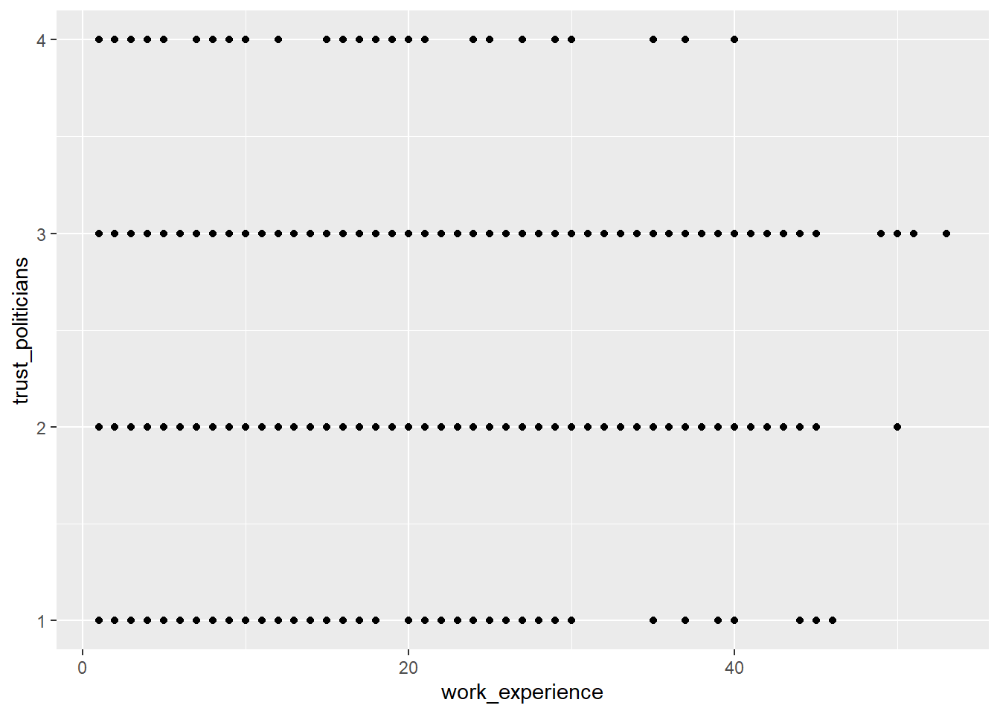

Solutions
This is where you’ll find solutions for all of the tutorials.
Solutions for Exercise 1
Task 1
Below you will see multiple choice questions. Please try to identify the correct answers. 1, 2, 3 and 4 correct answers are possible for each question.
1. What panels are part of RStudio?
Solution:
- source (x)
- console (x)
- packages, files & plots (x)
2. How do you activate R packages after you have installed them?
Solution:
- library() (x)
3. How do you create a vector in R with elements 1, 2, 3?
Solution:
- c(1,2,3) (x)
4. Imagine you have a vector called ‘vector’ with 10 numeric elements. How do you retrieve the 8th element?
Solution:
- vector[8] (x)
5. Imagine you have a vector called ‘hair’ with 5 elements: brown, black, red, blond, other. How do you retrieve the color ‘blond’?
Solution:
- hair[4] (x)
Task 2
Create a numeric vector with 8 values and assign the name age to the vector. First, display all elements of the vector. Then print only the 5th element. After that, display all elements except the 5th. Finally, display the elements at the positions 6 to 8.
Solution:
## [1] 65 52 73 71 80 62 68 87## [1] 80## [1] 65 52 73 71 62 68 87## [1] 62 68 87Task 3
Create a non-numeric, i.e. character, vector with 4 elements and assign the name eye_color to the vector. First, print all elements of this vector to the console. Then have only the value in the 2nd element displayed, then all values except the 2nd element. At the end, display the elements at the positions 2 to 4.
Solution:
## [1] "blue" "green" "brown" "grey"## [1] "green"## [1] "blue" "brown" "grey"## [1] "green" "brown" "grey"## [1] "green"## [1] "blue" "brown" "grey"## [1] "green" "brown" "grey"Solutions for Exercise 2
Task 1
Download the “WoJ_names.csv” from LRZ Sync & Share (click here) and put it into the folder that you want to use as working directory.
Set your working directory and load the data into R by saving it into a source object called data. Note: This time, it’s a csv that is separated by semicolons, not by commas.
Solution:
Task 2
Now, print only the column to the console that shows the trust in
government. Use the $ operator first. Then try to achieve the same
result using the subsetting operators, i.e. [].
Solution:
## [1] 3 4 4 4 2 4 1 3 1 3 2 3 2 2 2 2 3 3 4 3 3 2 3 4 3 3 3 2 3 3 3 3 4 2 3 2 2 2
## [39] 2 3## [1] 3 4 4 4 2 4 1 3 1 3 2 3 2 2 2 2 3 3 4 3 3 2 3 4 3 3 3 2 3 3 3 3 4 2 3 2 2 2
## [39] 2 3Solutions for Exercise 3
Task 1
Below you will see multiple choice questions. Please try to identify the correct answers. 1, 2, 3 and 4 correct answers are possible for each question.
1. What are the main characteristics of tidy data?
Solution:
- Every observation is a row. (x)
2. What are dplyr functions?
Solution:
mutate()(x)
3. How can you sort the eye_color of Star Wars characters from Z to A?
Solution:
starwars_data %>% arrange(desc(eye_color))(x)starwars_data %>% select(eye_color) %>% arrange(desc(eye_color))
4. Imagine you want to recode the height of the these characters. You want to have three categories from small and medium to tall. What is a valid approach?
Solution:
starwars_data %>% mutate(height = case_when(height<=150~"small",height<=190~"medium",height>190~"tall"))
5. Imagine you want to provide a systematic overview over all hair colors and what species wear these hair colors frequently (not accounting for the skewed sampling of species)? What is a valid approach?
Solution:
starwars_data %>% group_by(hair_color, species) %>% summarize(count = n()) %>% arrange(hair_color)
Task 2
Now it’s you turn. Load the starwars data like this:
library(dplyr) # to activate the dplyr package
starwars_data <- starwars # to assign the pre-installed starwars data set (dplyr) into a source object in our environmentHow many humans are contained in the starwars data overall? (Hint: use
summarize(count = n()) or count())?
Solution:
You can use summarize(count = n()):
## # A tibble: 1 × 1
## count
## <int>
## 1 35Alternatively, you can use the count() function:
## # A tibble: 1 × 2
## species n
## <chr> <int>
## 1 Human 35Task 3
How many humans are contained in starwars by gender?
Solution:
You can use summarize(count = n()):
starwars_data %>%
filter(species == "Human") %>%
group_by(species, gender) %>%
summarize(count = n())## # A tibble: 2 × 3
## # Groups: species [1]
## species gender count
## <chr> <chr> <int>
## 1 Human feminine 9
## 2 Human masculine 26Alternatively, you can use the count() function:
## # A tibble: 2 × 3
## species gender n
## <chr> <chr> <int>
## 1 Human feminine 9
## 2 Human masculine 26Task 4
What is the most common eye_color among Star Wars characters? (Hint: use
arrange())__
Solution:
## # A tibble: 15 × 2
## eye_color count
## <chr> <int>
## 1 brown 21
## 2 blue 19
## 3 yellow 11
## 4 black 10
## 5 orange 8
## 6 red 5
## 7 hazel 3
## 8 unknown 3
## 9 blue-gray 1
## 10 dark 1
## 11 gold 1
## 12 green, yellow 1
## 13 pink 1
## 14 red, blue 1
## 15 white 1Alternatively, you can use the count() function:
## # A tibble: 15 × 2
## eye_color n
## <chr> <int>
## 1 brown 21
## 2 blue 19
## 3 yellow 11
## 4 black 10
## 5 orange 8
## 6 red 5
## 7 hazel 3
## 8 unknown 3
## 9 blue-gray 1
## 10 dark 1
## 11 gold 1
## 12 green, yellow 1
## 13 pink 1
## 14 red, blue 1
## 15 white 1Task 5
What is the average mass of Star Wars characters that are not human and
have yellow eyes? (Hint: remove all NAs)__
Solution:
starwars_data %>%
filter(species != "Human" & eye_color=="yellow") %>%
summarize(mean_mass = mean(mass, na.rm=TRUE))## # A tibble: 1 × 1
## mean_mass
## <dbl>
## 1 74.1Task 6
Compare the mean, median, and standard deviation of mass for all humans
and droids. (Hint: remove all NAs)__
Solution:
starwars_data %>%
filter(species=="Human" | species=="Droid") %>%
group_by(species) %>%
summarize(M = mean(mass, na.rm = TRUE),
Med = median(mass, na.rm = TRUE),
SD = sd(mass, na.rm = TRUE)
)## # A tibble: 2 × 4
## species M Med SD
## <chr> <dbl> <dbl> <dbl>
## 1 Droid 69.8 53.5 51.0
## 2 Human 82.8 79 19.4Task 7
Create a new variable in which you store the mass in gram. Add it to the data frame.
Solution:
starwars_data <- starwars_data %>%
mutate(gr_mass = mass*1000)
starwars_data %>%
select(name, species, mass, gr_mass)## # A tibble: 87 × 4
## name species mass gr_mass
## <chr> <chr> <dbl> <dbl>
## 1 Luke Skywalker Human 77 77000
## 2 C-3PO Droid 75 75000
## 3 R2-D2 Droid 32 32000
## 4 Darth Vader Human 136 136000
## 5 Leia Organa Human 49 49000
## 6 Owen Lars Human 120 120000
## 7 Beru Whitesun lars Human 75 75000
## 8 R5-D4 Droid 32 32000
## 9 Biggs Darklighter Human 84 84000
## 10 Obi-Wan Kenobi Human 77 77000
## # ℹ 77 more rowsSolutions for Exercise 4
Task 1
Show how journalists’ work experience (work_experience) is associated with their trust in politicians (trust_politicians). To do this, create a very basic scatter plot using ggplot2 and the respective ggplot() function. Use the aes() function inside ggplot() to map variables to the visual properties. Use geom_point() to add points to the plot.
Solution:

Task 2
Do more experienced journalists become less trusting in politicians? Add this code to your plot to create a regression line:
+ geom_smooth(method = lm, se = FALSE).
What can you conclude from the regression line?
Solution:
The regression line shows us that there is no relationship between work experience and trust in politicians. In other words, more experienced journalists do not become less trusting in politicians.
Task 3
Does the relationship between work experience and trust in politicians remain stable across different countries? Alternatively, does work experience influence trust in politicians differently depending on the specific country context?
Try to create a visualization to answer this question using facet_wrap().
Solution:
Task 4
In your current visualization, it may be challenging to discern cross-country differences. Let’s aim to create a visualization that illustrates these differences across countries more distinctly.
Remove the facet_wrap() and the geom_point() code line. This leaves you with this graph:
Now, display every country in a separate color by using the color argument inside the aes() function.
Solution:

Task 5
Add fitting labels to your plot. For example, set the main title to display: “Impact of Work Experience on Trust in Politicians”. The x-axis label should read “Years of Work Experience in Journalism”, and the y-axis label should read “Trust in Politicians on a 5-point Likert Scale”. The label for the color legend should be “Country”.
Solution:
Solutions for Exercise 5
First, load the library stringr (or the entire tidyverse).
We will work on real data in this exercise. But before that, we will test our regex on a simple “test” vector that contains hyperlinks of media outlets and webpages. So run this code and create a vector called “seitenURL” in your environment:
seitenURL <- c("https://www.bild.de", "https://www.kicker.at/sport", "http://www.mycoffee.net/fresh", "http://www1.neuegedanken.blog", "https://home.1und1.info/magazine/unterhaltung", "https://de.sputniknews.com/technik", "https://rp-online.de/nrw/staedte/geldern", "https://www.bzbasel.ch/limmattal/region-limmattal", "http://sportdeutschland.tv/wm-maenner-2019")Task 1
Let’s get rid of the first part of the URL strings in our “seitenURL” vector, i.e., everything that comes before the name of the outlet (You will need to work with str_replace). Usually, this is some kind of version of “https://www.” or “http://www.” Try to make your pattern as versatile as possible! In a big data set, there will always be exceptions to the rule (e.g., “http://sportdeutschland.tv”), so try to match regex–i.e., types of characters instead of real characters–as often as you can!
seitenURL <-str_replace(seitenURL, "^(http)(s?)[:punct:]{3}(www[:punct:]|www1[:punct:]|w?)", "")
# this matches all strings that start with http: '^(http)'
# this matches all strings that are either http or https: (s?) -> because '?' means "zero or more"
# followed by exactly one dot and two forwardslashes: '[:punct:]{3}'
# followed by either a www.: '(www[:punct:]'
# or followed by a www1.: '|www1[:punct:])'
# or not followed by any kind of www (this is necessary for the rp-online-URL): 'w?'
# and replaces the match with nothing, i.e., an empty string: ', ""'Task 2
Using the seitenURL vector, try to get rid of the characters that follow the media outlet (e.g., “.de” or “.com”).
Task 3
Use this command and adapt it with your patterns (it uses str_replace in combination with mutate):
Task 4
The data set provides two additional, highly informative columns: “SeitenAnzahlTwitter” and “SeitenAnzahlFacebook”. These columns show the number of reactions (shares, likes, comments) for each URL. Having extracted the media outlets, let us examine which media outlet got the most engagement on Twitter and Facebook from all their URLs. Utilize your dplyr abilities to create an R object named “overview” that stores the summary statistic (remember group_by and summarize!) of the engagement on Twitter and Facebook per media outlet.
Next, arrange your “overview” data to reveal which media outlet creates the most engagement on Twitter. Do the same for Facebook.